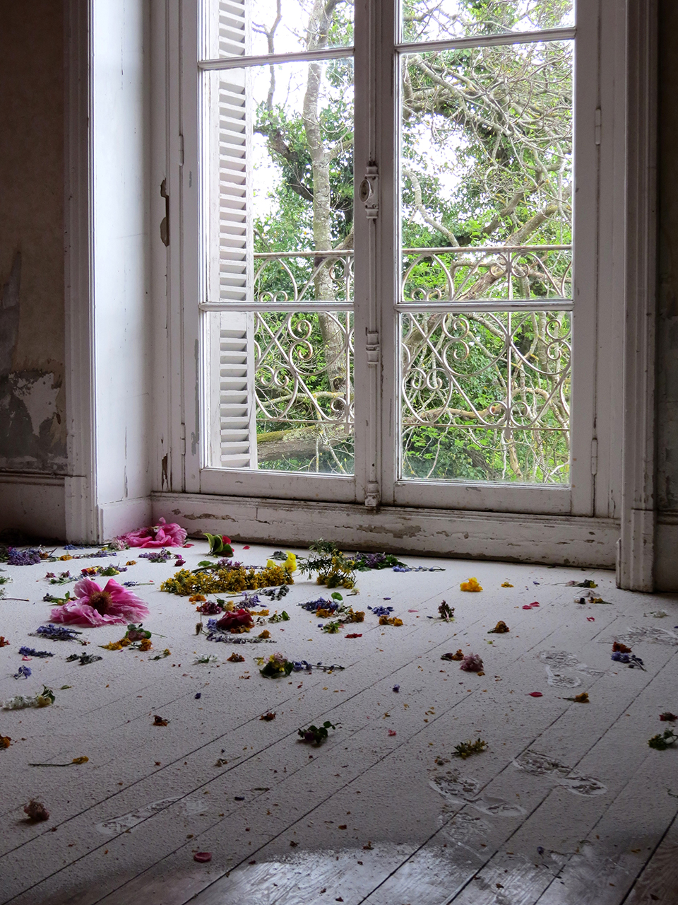
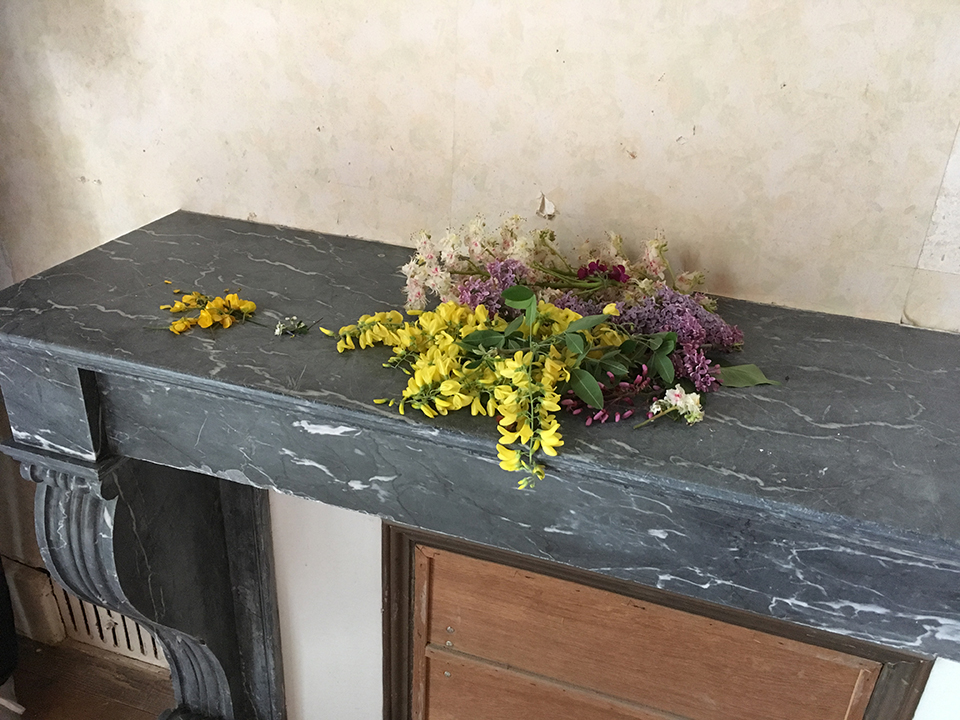
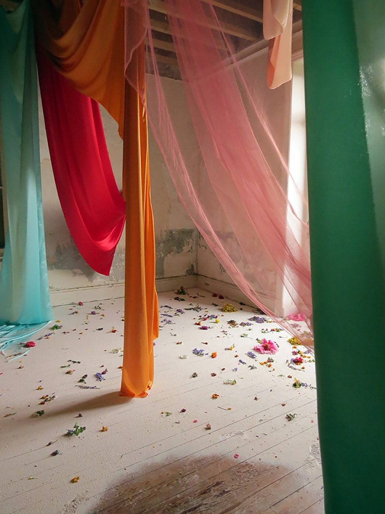

Le chercheur d'or (The gold digger)
Fresh flowers, plaster, textiles, golden flakes phial, text prints on sheets to take away
villà, Villa Rohannec'h, Saint Brieuc
April 2018
Photographs : Virginie Barré, Bruno Peinado, Gilbert Bertrand